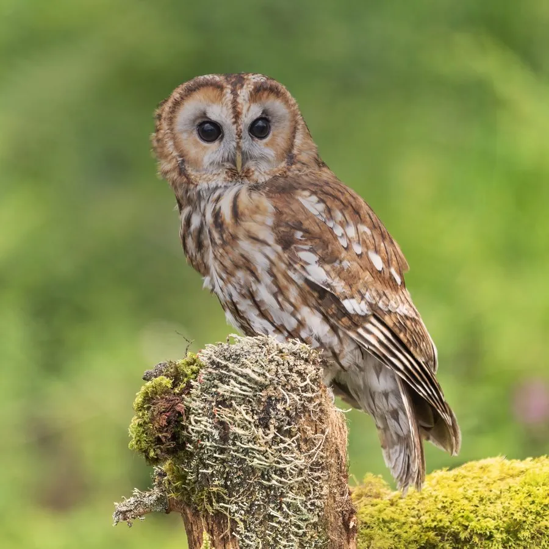

鸟类 · 动物界
灰林鸮 Strix aluco

体型敦实的林鸮，头圆无耳羽，面盘完整，眼睛深黑。羽色有棕红与灰褐两型，夜间以“嘟—呜”二重唱宣示领地。
- 分类
- 门脊索动物门纲鸟纲目鸮形目科鸱鸮科属林鸮属
- 栖息环境
- 阔叶林、混交林、公园、古老庭园与农田林网，需要有大型树洞或岩缝供营巢。
- 地理分布
- 欧洲、北非、西亚至中亚；中国仅见于新疆天山及阿尔泰山一带。
- 保护级别
- IUCN 红色名录列为无危（LC）；中国国家二级保护野生动物，列入 CITES 附录二。
物种志
灰林鸮体长约三十七至四十三厘米，体重三百八十五至八百克，雌鸟较大。头部圆大，没有耳羽簇，面盘轮廓清晰，眼周深色，虹膜几乎全黑，这是区别于其他林鸮的重要特征。羽色分棕红色与灰褐色两型，上体具深色纵纹和浅色斑驳，下体色浅并密布褐色纵纹。嘴黄绿色，脚被羽，爪深色。
它栖息于阔叶林、混交林、公园与古老庭园，领域性极强，常年成对占据同一片林地。夜间从栖枝俯冲捕食田鼠、林鼠、鼩鼱与小鸟，也吃蛙和昆虫。繁殖期在树洞、岩缝或旧建筑中营巢，每窝产卵二至五枚。经典鸣声为雄鸟“嘟—嘟—嘟”与雌鸟“呜——”的二重唱，是欧洲秋夜最具辨识度的声音之一。灰林鸮分布于欧洲、西亚至中亚，中国新疆天山一带为其东缘分布区。
形态与习性
- 体长37–43 厘米
- 体重385–800 克
- 食性田鼠、林鼠、小鸟、蛙与昆虫
- 繁殖树洞或岩缝营巢，每窝 2–5 枚
- 羽色棕红色型与灰褐色型
- 保护级别国家二级；CITES 附录二
趣味知识
- 眼睛深黑无神，与多数猫头鹰的黄色眼睛不同。
- 雌雄会二重唱，声音传遍整片林地。
- 领域性极强，一对成鸟可多年守住同一片树林。